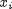
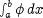
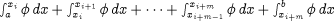
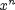
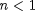

The solution of systems of IPDAEs is generally a difficult problem. Changing the value of a parameter or one of the boundary conditions may lead to completely different behaviour from that originally anticipated. Furthermore, although some numerical methods can accurately solve a given system, other numerical methods may be totally unable to do so.
The systems of IPDAEs defined within gPROMS Models are solved using the method-of-lines family of numerical methods. This involves discretisation of the distributed equations with respect to all spatial domains, which reduces the problem to the solution of a set of DAEs.
A number of different techniques fall within the method-of-lines family of methods, depending on the discretisation scheme used for discretising the spatial domains. Ideally, this discretisation scheme should be selected automatically – or, indeed, a single discretisation method that can deal efficiently with all forms of equations and boundary conditions would be desirable. However, this is not technically feasible at the moment and therefore gPROMS relies on the user to specify the preferred discretisation method. Three specifications are necessary to completely determine most discretisation methods:
Type of spatial discretisation method. The proper choice of the discretisation method is often the critical decision for solving a system of IPDAEs. As we mentioned earlier, because no method is reliable for all problems, the incorrect choice of method may lead to physically unrealistic solutions, or even fail to obtain any results.
Order of approximation. The order of approximation for partial derivatives and integrals in finite difference methods, and the degree of polynomials used in finite element methods has a great influence on the accuracy of the solution. This is especially true if coarse grids or only a small number of elements are used.
Number of discretisation intervals/elements. The number of discretisation intervals in finite difference methods and the number of elements in finite element methods are also of great significance in determining the solution trajectory. A coarse grid or a small number of elements for a steep gradient problem may result in an unacceptably inaccurate solution. On the other hand, too fine a grid or too many elements will increase the required computational efforts drastically, leading to an inefficient solution procedure.
The gPROMS language allows users to specify all three characteristics. DISTRIBUTION_DOMAINs are treated as Parameters and can be Set to the desired discretisation method, order and granularity of approximation. The table below lists the currently available numerical methods, their corresponding keywords in the language and the currently supported orders of approximation for each.
| Numerical method | Keyword | Order(s) |
|---|---|---|
| Centered finite difference method | CFDM | 2, 4, 6 |
| Backward finite difference method | BFDM | 1, 2 |
| Forward finite difference method | FFDM | 1, 2 |
| Orthogonal collocation on finite elements method | OCFEM | 2, 3, 4 |
As was mentioned earlier, the numerical methods applied to integrals depend on the nature of the integrand. If the integrand is an expression involving only the integration variable, then the integration method is fixed (since there is no way to specify the method). These implicit integrals are all evaluated using 5th order Gaussian Quadrature. If the integrand involves one or more distributed Model Variables, then the method of the integration is explicitly specified (because all distributed Variables must be defined over a Distribution Domain, which must be set a value as described in the table above). The following procedure below is applied to any integrals of this nature.
First, if the integral is defined over more than one domain, it is decomposed into a nested set of 1-D integrations. The innermost integrals are evaluated first, which provide terms in the integrands at the next level, which now become ordinary 1-D integrals themselves. This procedure is repeated until the outermost integral (i.e. the one with the highest dimension) has been evaluated.
Each of the 1-D integrals that must be evaluated in step 1 are first decomposed into a sum of integrals over a set of subintervals. This is based on the range of the Distribution Domain and number of intervals specified in its numerical method. This gives a number of interval boundaries, . An integral of the form

then becomes
.
So, if the integral is specified over the interval [a,b] within a Distribution Domain defined to be over the interval [0,L] with a numerical method using N intervals, the number of subintervals used for the integration will be roughly (b-a)N/L.
Each of the subintegrals in step 2 is integrated using a polynomial approximation consistent with the numerical method specified for the Distribution Domain.
The numerical methods applied to the various integrals that may be encountered in gPROMS Models are summarised in the table below.
| Type of integral | Numerical method used | Number of intervals |
|---|---|---|
| Implicit | 5th order, six point Gaussian Quadrature | – |
| Explicit | approximation is consistent with numerical method used to approximate partial derivatives | depends on the Distribution Domain and the integration interval |
Clearly, the numerical methods used in evaluating integrals have a direct effect on the accuracy of the solution. There are some situations where the Gaussian Quadradure used in evalulating implicit integrals results in significant errors. One example is the power function . When , the results of the numerical integration can be quite poor. Of course, when the integral can be solved analytically, it is always better to include the analytical expression rather than the integral, as in this case. However, should numerical integration be required, greater accuracy can sometimes be achieved by defining a distributed Variable (over a newly specified domain), equating it to the integrand and then integrating the Variable. Then, the number of elements can be specified such that the accuracy of the integral is as required. An example of this is shown below.
DISTRIBUTION_DOMAIN MyIntegrationDomain AS [1:100] VARIABLE Integrand AS DISTRIBUTION(MyIntegrationDomain) OF NoType Implicit AS NoType Explicit AS NoType SET MyIntegrationDomain := [ BFDM, 1, 200 ] ; EQUATION FOR x := 1 TO 100 DO Integrand(x) = 1/x ; END Implicit = INTEGRAL( x := 1:100; 1/x ) ; Explicit = INTEGRAL( x := 1:100; Integrand(x) ) ;Here, the same integration is performed using the two methods. The implicit method will be quite inaccurate, whereas the explicit one will be much better (depending on the order and number of elements specified for MyIntegrationDomain).
Example 3. Setting the discretisation methods, orders and granularities
# PROCESS StartUpSimulation UNIT R101 IS TubularReactor ... SET R101.Axial := [ CFDM, 2, 150] ; R101.Radial := [ OCFEM, 3, 4] ; ...
An excerpt from a Process entity involving an instance R101 of a 2D tubular reactor Model. The
Axial domain within this instance is to be discretised using centered finite differences of second order over a uniform
grid of 150 intervals. On the other hand, the Radial domain is to be handled using third order orthogonal collocation
over four finite elements. Note that the specification of discretisation methods is done separately for each distribution domain in each
instance of the corresponding Model, thus allowing maximal flexibility in this respect.
Similarly to other Parameters, although it is possible to specify numerical solution method information within the Models themselves, in the interests of model reusability and generality, is often better to associate these with the specific instances of Models that are included in Processes.